Editors - Properties Editor - Bone Tab
The bone tab contains bone related settings. The content differs from mode to mode.
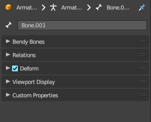 |
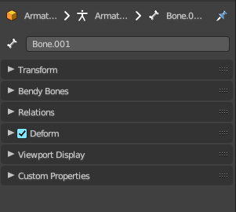 |
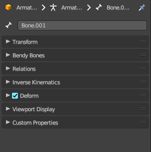 |
| Object Mode | Edit Mode | Pose Mode |
Transform panel
Edit Mode
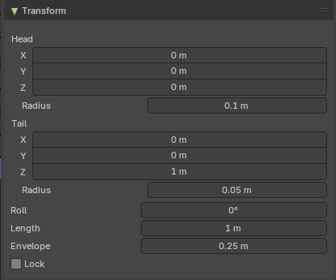
Bones do have a head and a tail. You cannot position the whole bone by numeric values, but the head and tail joints.
| Entry | What it does |
|---|---|
| Head | Adjust the world position of the head joint in x, y and z coordinates. · Radius: This is just useful when you use Envelopes type bones. Adjust the Envelope radius of the head joint. |
| Tail | Adjust the world position of the tail joint in x, y and z coordinates. · Radius: This is just useful when you use Envelopes type bones. Adjust the Envelope radius of the tail joint. |
| Roll | Adjust the bone roll. · Length: Adjust the length of the bone. · Envelope: This is just useful when you use Envelopes type bones. Adjust the overall Envelope size. · Lock: Lock the transform of the bones in edit mode. The bones cannot be moved, rotated or scaled. |
Pose Mode
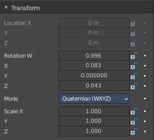
| Entry | What it does |
|---|---|
| Location X Y Z | The location of the root bone. Just the root bone can be re-positioned. For all other bones in the hierarchy the edit boxes are greyed out. |
| Rotation W X Y Z | The rotation of the current bone. With Mode Quaternion you will have the W axis too. With euler angles you will just have X Y and Z axis. |
Mode
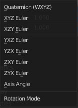
The rotation mode to use. Euler angles can run into a gimbal lock problem. This means the bone is not longer rotatable. Quaternion rotation avoids gimbal lock.
Scale X Y Z
The scale of the bone.
Bendy Bones panel
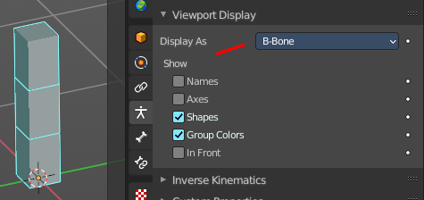
Settings for bendy bones. Bendy bones, also called Bbone, is a special bone mode that allows to divide bones into segments that can be bend and rotated. The “BBone Shape” Keying Set includes all Bendy Bones properties.
You have to activate Bbone in the Object data in the Viewport Display panel. Display as.

The settings becomes activated when the number of segments is higher than 1.
| Entry | What it does |
|---|---|
| Segments | The Segments number field allows you to set the number of segments, which the given bone is subdivided into. Segments are small, rigid linked child bones that interpolate between the root and the tip. The higher this setting, the smoother “bends” the bone, but the heavier the pose calculations. |
| Curve X Y Offsets | Applies offsets to the curve handle positions on the plane perpendicular to the bone’s primary (Y) axis. As a result, the handle moves per axis (XY) further from its original location, causing the curve to bend. |
| Roll | Roll In, Out The roll value (or twisting around the main Y axis of the bone) is interpolated per segment, between the start and end roll values. It is applied as a rotational offset on top of the previous rotation. |
| Inherit End Roll | If enabled, the Roll Out value of the Start Handle bone (connected parent by default) will be implicitly added to the Roll In setting of the current bone. |
| Scale | Scale In X/Y, Scale Out X/Y Scaling factor that adjusts the thickness of each segment for the X and Y axes only, i.e. length (Z axis) is not affected. Similar to Roll it is interpolated per segment. |
| Ease In , Ease Out | The Ease In/Out number fields, change the “length” of the “auto” Bezier handle to control the “root handle” and “tip handle” of the bone, respectively. These values are proportional to the default length, which of course automatically varies depending on bone length, angle with the reference handle, and so on. |
Scale Easing

Multiply the final easing values by the Scale In and Out Y value.
Custom Handles
B-Bones can use custom bones as their reference bone handles, instead of only using the connected parent/child bones.
Start + End Handle Type
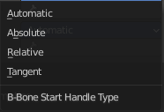
Specifies the type of the handle from the following choices:
| Entry | What it does |
|---|---|
| Automatic | The connected parent (or first connected child) of the bone is chosen as the handle. Calculations are done according to the Absolute handle type below. |
| Absolute | The Bezier handle is controlled by the position of the head (tail) of the handle bone relative to the head (tail) of the current bone. If the handle is also a B-Bone, additional processing is applied to further smooth the transition, assuming that the bones in effect form a chain. |
| Relative | The Bezier handle is controlled by the offset of the head (tail) of the handle bone from its rest pose. The use of this type is not recommended due to numerical stability issues near zero offset. |
| Tangent | The Bezier handle is controlled by the orientation of the handle bone, independent of its location. |
| Custom Handle | For types other than Automatic, a bone to use as handle has to be manually selected. Switching to a custom handle type without selecting a bone can be used to effectively disable the handle. It is valid for two bones to refer to each other as handles – this correlation is applied in connected chains with Automatic handles. |
| Scale | Multiply the B Bone scale out channels by the local scale values of the start or end handle in x, y or z direction. |
| Ease | Use easing for the scaling, not linear. |
Relations panel
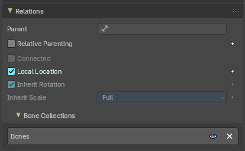
Relation related settings. Note that in Edit mode relative parenting does not display.
| Entry | What it does |
|---|---|
| Parent | Usually bones are in a hierarchy with parent and child bones. This parent edit box displays the parent bone. The parent bone can be edited in edit mode. |
| Relative Parenting | Object children will use relative transform. Like deform. |
| Connected | Set the head of the bone to be connected with its parent root. |
| Local Location | When disabled, the location transform property is evaluated in the parent bone’s local space, rather than using the bone’s own rest pose local space orientation. |
| Inherit Rotation | When disabled, this will “break” the rotation relationship to the bone’s parent. This means that the child will keep its rotation in the armature object space when its parent is rotated. |
Inherit Scale
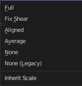
Specifies which effects of parent scaling the bone inherits.
| Entry | What it does |
|---|---|
| Full | The bone inherits all effects of parent scaling and shear. |
| Fix Shear | Corrects the transformation inherited from the parent to remove shear caused by non-uniform parent scaling and rotation. The process preserves the bone direction, length and volume, and minimally affects roll on average. If the inherited scale is non-uniform, this does not prevent shear from reappearing due to local rotation of the child bone, or of its children. |
| Aligned | Parent scaling is inherited as if the child was oriented the same as the parent, always applying parent X scale over child X scale, and so on. This mode never causes shear and is natural for connected chains like limbs and tentacles. |
| Average | Inherits a uniform scaling factor that is the total change in the volume of the parent. This effectively keeps the uniform part of the scaling of the parent, while removing squash and stretch effects. Uniform scaling never causes shear. |
| None | Ignores all scaling and shear of the parent. |
None (Legacy)
Ignores all scaling, provided the parent is not sheared. If it is, there are no guarantees.
This choice replicates the behavior of the old Inherit Scale checkbox, and may be removed in a future release.
These inheriting behaviors propagate along the bones’ hierarchy. So when you scale down a bone, all its descendants are by default scaled down accordingly. However, if you disable one bone’s Inherit Scale or Inherit Rotation property in this “family”, this will break the scaling propagation, i.e. this bone and all its descendants will no longer be affected when you scale one of its ancestors.
Bone Collections subpanel
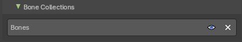
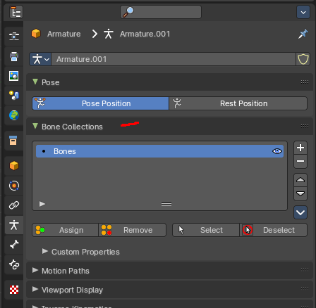
Bones can be organized and can exist in different collections. Here you can see and to some degree manage them. Creating the collections is not possible from here. This must be done in the data tab in the Bone Collection panel.
| Entry | What it does |
|---|---|
| Visible | Make the collection visible or invisible. |
| Remove | Removes the bone from the bone collection. Attention, there is no way to add this bone back then. The remove functionality just works in edit and pose mode. |
Deform panel
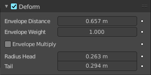
| Entry | What it does |
|---|---|
| Deform | Enable the bone to deform geometry. Toggling the checkbox in the panel header off, prevents the bone from deforming the geometry at all, overriding any weights that it might have been assigned before; It mutes its influence. It also excludes the active bone in the automatic weight calculation when the mesh is parented to the armature using the Armature Deform tool with the “With Automatic Weights” option. |
| Envelope Distance | Envelope is something like a hull around the bone, which defines an influence area for weighting. The Distance defines a volume which is the range within the bone has an influence on vertices of the deformed object. The geometry is less and less affected by the bone as it goes away by following a quadratic decay. |
Envelope Weight
A bone property, that controls the global influence of the bone over the deformed object, when using the envelopes method.
It is only useful for the parts of geometry that are “shared”, influenced by more than one bone (generally, at the joints…) – a bone with a high weight will have more influence on the result than one with a low weight… Note that when set to 0.0, it has the same effect as disabling the Deform option.
| Entry | What it does |
|---|---|
| Envelope Multiply | When deforming bone, multiply effects of vertex group weights with Envelope influence. |
| Radius Head | Set the radius for the head of envelope bones. Inside this volume, the geometry if fully affected by the bone. |
| Tail | Set the radius for the tail of envelope bones. Inside this volume, the geometry if fully affected by the bone. |
Inverse Kinematics panel
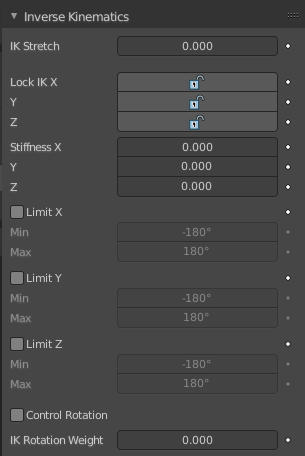
Settings for inverse kinematics. This is for Pose mode only.
| Entry | What it does |
|---|---|
| IK stretch | Allow scaling of the bone for IK. |
| Lock IK X Y Z | Lock the single axis for IK. |
| Stiffness X Y Z | Add a stiffness around the axis. |
| Limit X | Limit movement around the X axis. |
| Limit Y | Limit movement around the X axis. |
| Limit Z | Limit movement around the X axis. |
Control Rotation
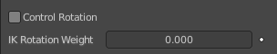
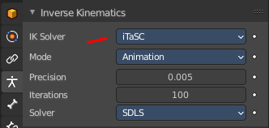
When you use Inverse Kinematics with the iTaSC solver in the object data properties in the Inverse Kinematics panel, then you will reveal this checkbox.
Apply channel rotation as IK constraint.
IK Rotation Weight
Weight of rotation constraint for IK.
Viewport Display panel
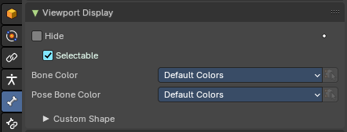
This panel controls the viewport display settings of each bone.
Note: To apply settings to all bones, hold down Alt before selecting or toggling.
Hide
Hides the selected bone in the viewport. This toggle is mode dependant. So it is possible for example to hide the bone in edit mode, but keep in pose and object mode.
Selectable
If the bone can be selected or not.
Display As
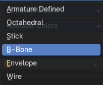
How to display the armature in the viewport.
Bone Color
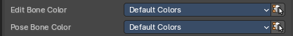
Use a color theme for your bone group.
| Entry | What it does |
|---|---|
| Bone Color Set | A set of predefined bone color sets for Edit Mode. Each set is made of three colors. · Normal: The first color field is the color of unselected bones. · Selected: The second color field is the outline color of selected bones. · Active: The third color field is the outline color of the active bone. The custom color set is editable. The other color sets are fixed. |
| Copy Colors to to Selected | Pose mode only. Copy the bone color of the active bone to all selected bones. |
Pose Bone Color
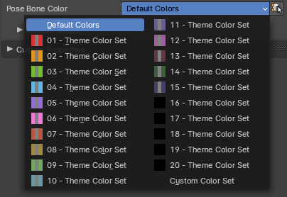
A set of predefined bone color sets for Pose Mode. Like in the Edit Bone Colors, each set is made of three colours based on a normal colour, selected and active.
Note: You can change pose bone colour in Pose Mode too.
Sync to Selected
Pose mode. Copy the bone color of the active bone to all selected bones.
Custom Shape
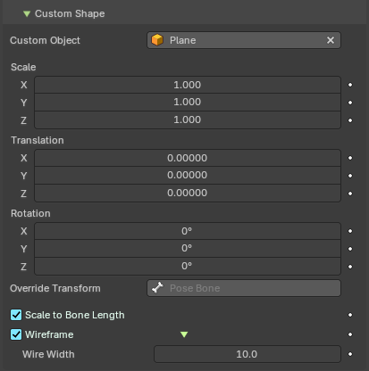
Use a custom object to be displayed as the bone in Object and Pose mode.
| Entry | What it does |
|---|---|
| Workflow | Switch to Pose Mode. Select the relevant bone by clicking on it. Go to the Display panel Custom Shape field and select an object in the scene that you want to use as a display object. |
| Custom Object | The object that defines the custom shape of the selected bone. |
| Scale | The scale of the custom object. |
| Translation | Position the custom object. |
| Rotation | Rotate the custom object. This happens in Euler angles. |
Override Transform
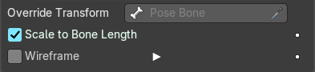
Bone that defines the display transform of the custom shape.
Affect Gizmo
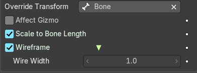
Use the orientation of the custom shape transform bone for the transform gizmos and other transform operators in the 3d view.
Use As Pivot
Transform the bone as if it would be child of the custom shape transform bone.
| Entry | What it does |
|---|---|
| Scale to Bone Length | Scale the custom object. |
| Scale to Bone Length | Option not to use bones length, so that changes in Edit Mode don’t resize the custom shape. |
Wireframe
Display wireframe on bones regardless of viewport shading mode.
Wire width
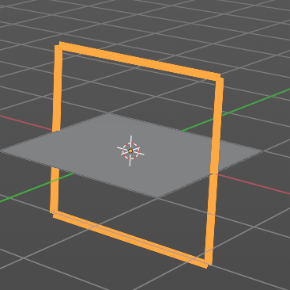
The width of the wireframe of the custom shape.